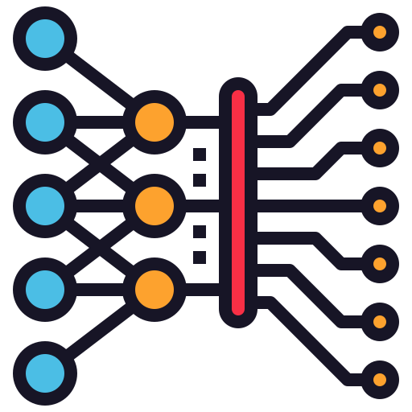

TICS-411 Minería de Datos
Clase 1: Calidad de los Datos y Preprocesamiento
Mar 14, 2024
Tipos de Datos: Datos Tabulares

- Filas: Observaciones, registros, instancias. (Normalmente independientes).
- Columnas: Variables, Atributos, Features.
- Probablemente el tipo de datos más amigable.
- Requiere conocimiento de negocio (Domain Knowledge)
- Es un % bajísimo del total de datos existentes en el Mundo.
- Distintos tipos, por lo que normalmente requiere de algún tipo de preprocesamiento.
¿Quién soy?

- Alfonso Tobar-Arancibia, estudié Ingeniería Civil pero llevo 9 años trabajando como:
- Data Analyst.
- Data Scientist.
- ML Engineer.
- Data Engineer.
- Terminando mi Msc. y empezando mi PhD en la UAI.
- He ganado 2 competencias de Machine Learning.
- Publiqué mi primer paper el año pasado sobre Hate Speech en Español.
- Juego Tenis de Mesa, hago Agility con mi perrita Kira y escribo en mi Blog.
{kind=link}
{kind=link}
{kind=link}
{kind=link}
Nace el Data Science (Ciencia de Datos)

Tipos de Datos
Datos Estructurados
Datos No Estructurados


Tipos de Datos: Datos Tabulares
- Filas: Observaciones, instancias. (Normalmente independientes).
- Columnas: Variables, Atributos, Features.
- Probablemente el tipo de datos más amigable.
- Requiere conocimiento de negocio (Domain Knowledge)
- Es un % bajísimo del total de datos existentes en el Mundo.
- Distintos tipos, por lo que normalmente requiere de algún tipo de preprocesamiento.
{kind=link}
{kind=link}
{kind=link}
{kind=link}
{kind=link}
{kind=link}
{kind=link}
Regresión y Clasificación

- Regresión: Se busca estimar un valor continuo.
(Estimar el valor de una casa).
- Clasificación: Se busca encontrar una categoría o un valor discreto.
(Clasificar una imagen como Perro o Gato).
- Para entrenar este tipo de modelos se necesitan
etiquetas, es decir, la respuesta esperada del modelo.
{kind=link}
{kind=link}
Nuestro Sistema de ML
Creemos un Sistema de ML que sea capaz de ver una imágen y pronunciar correctamente el uso de la letra C.
Vamos a Entrenar un Modelo.

Nuestro Sistema de ML: Nuevas instancias de Entrenamiento
KuchilloChokolate
SinselNo es bueno entrenar con las mismas instancias de entrenamiento. ¿Por qué?
Gracias